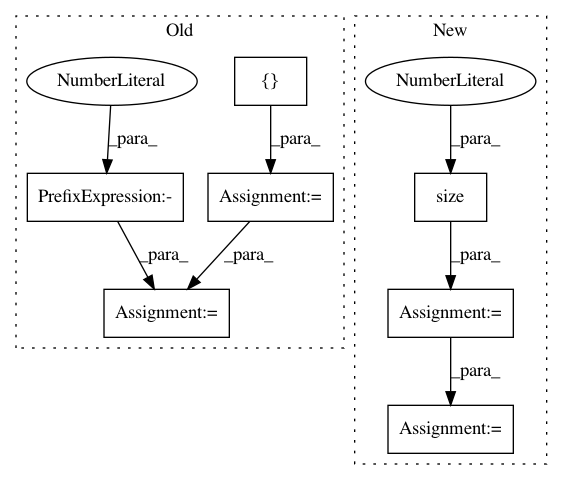

d8a075668b6e9cdf4c08f6c7285e5c7d2fbf5332,torch_geometric/graph/geometry.py,,edges_from_faces,#Any#,38
Before Change
return ValueError()
// Append undirected edges.
edges = torch.cat((edges, edges.index_select(1, torch.LongTensor([1, 0]))))
// Sort the adjacencies row-wise.
edges = edges.t()
sorted, indices = torch.sort(edges[0], 0)
edges = torch.cat((sorted, edges[1][indices])).view(2, -1)
return edges
After Change
// Build directed adjacency matrix.
adj = torch.sparse.FloatTensor(edges.t(),
torch.ones(edges.size(0)),
torch.Size([n, n]))
// Convert to undirected adjacency matrix.
adj = adj + adj.t()
// Remove duplicate indices.
// NOTE: This doesn"t work if transpose(...) is removed.
adj = adj.transpose(0, 1).coalesce()
return adj._indices()
In pattern: SUPERPATTERN
Frequency: 3
Non-data size: 7
Instances
Project Name: rusty1s/pytorch_geometric
Commit Name: d8a075668b6e9cdf4c08f6c7285e5c7d2fbf5332
Time: 2017-10-17
Author: matthias.fey@tu-dortmund.de
File Name: torch_geometric/graph/geometry.py
Class Name:
Method Name: edges_from_faces
Project Name: SenticNet/conv-emotion
Commit Name: 87d57a3d34a1eef2c6ad5519741710e3321f136c
Time: 2019-03-19
Author: 40890991+soujanyaporia@users.noreply.github.com
File Name: DialogueRNN/model.py
Class Name: BiE2EModel
Method Name: forward
Project Name: rusty1s/pytorch_geometric
Commit Name: b48c943b9f6248dbdd42d0fce44658b937098372
Time: 2017-10-23
Author: matthias.fey@tu-dortmund.de
File Name: torch_geometric/nn/functional/spline_gcn.py
Class Name:
Method Name: spline_gcn